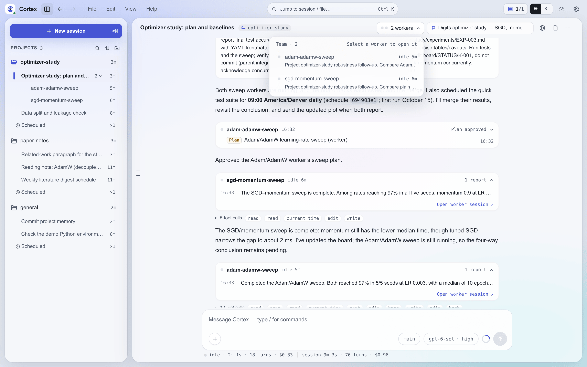
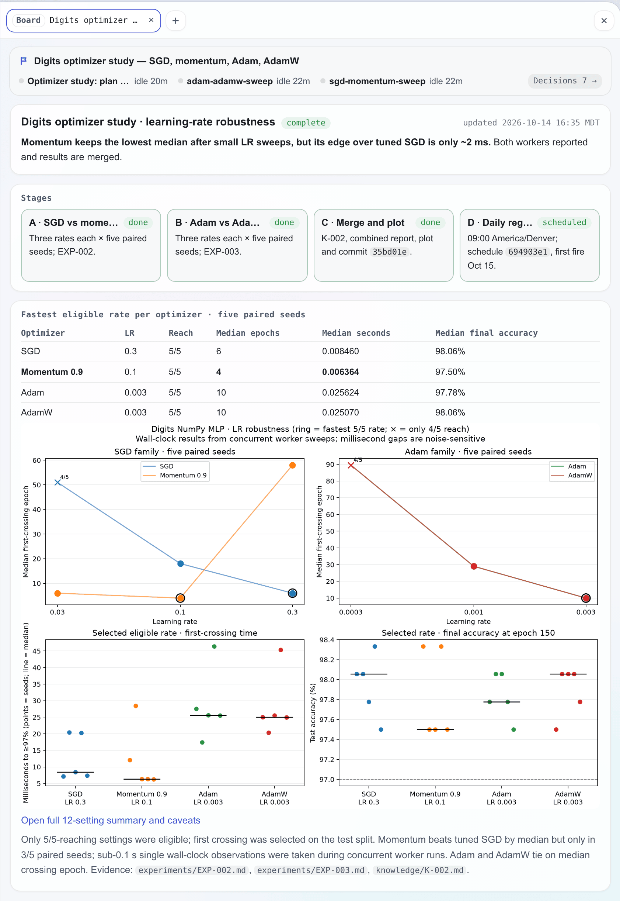

Team Mode¶
Team mode lets one conversation run a team. You talk to a single session, the lead, and it hands work to persistent worker sessions, continues them later, answers their questions and tells you what came back. You never open a session to give a piece of work its own context, or decide which conversation should carry on with what; the lead does that.
Team mode is experimental and on by default. Turn it off in Settings → Advanced → Team
(experimental), or set teamEnabled to false in settings.json (CORTEX_TEAM_ENABLED=0).
Leads and workers¶
With team mode on, every web session can lead. Nothing about a session changes until it starts a
worker: one with no workers looks and behaves like any other session. The only difference is a
set of worker_* tools in its tool list.
A worker is an ordinary session that belongs to a lead. It has its own transcript, context and
resume history, runs on Claude or PI like any session, and has the full tool surface, including
the one-shot agent tool. It cannot start workers of its own, so a team is one level deep.
A worker inherits its lead's project and copies the lead's complete engine selection:
backend, provider, model, thinking, and route. The lead can pass backend and model
in the same format as the agent tool (provider/model[:thinking] for PI, a bare model id
for Claude). On the same backend, only the named parts change. For another backend,
the worker starts from models.json's default if it belongs to that backend, otherwise
that backend's first favorite with its remembered settings. With neither available,
creation fails and asks you to favorite a model on that backend. An explicit change of
PI provider uses that provider's route. A Claude lead can run PI workers and vice versa.
Creating a worker leaves the engine choice for new user conversations unchanged.
A lead uses workers only when there are several tasks (or the work splits into several) or the user
switches to a different task; a single task stays in the lead's own session. For the work it hands
off, the lead chooses between a worker and the one-shot agent tool by what happens next. Work that
may need follow-up, runs long, or may need back-and-forth goes to a worker. Bounded reconnaissance or
verification whose result the lead uses straight away goes to agent. When the work runs on several
workers or across many hours, the lead also opens a board so you can follow it at a glance.
How work flows¶
you ⇄ lead ── worker_spawn / worker_send ──────────▶ worker
▲ ◀── report at the end of each worker turn ──┤
│ ◀── question / plan approval notice ────────┤
└──── worker_answer ──────────────────────────▶ (pending request resolved)
you ─────────── open the worker and talk to it directly ──▶ worker
Dispatch never blocks. worker_spawn and worker_send return at once. The lead ends its
turn, and the worker's report wakes it later. A message sent to a running worker is folded into
its current turn; to an idle worker it starts a new one. While the server is about to restart,
both tools return an error instead of dispatching, and the lead tries again after the restart.
Reports. Each worker turn ends in a report unless the worker marks it routine (below): its
final reply reaches the lead as a message headed [Worker <name> · completed|failed|stopped] with
a one-line status, and wakes it. A report that arrives while the lead is mid-turn is folded into
that turn. Turns you start yourself by typing in a worker are not reported; the lead's roster
marks that worker as one you have talked to. A server restart does not lose a report: one that
ends while a restart is pending reaches the lead once the server is back. A worker's finished
turn raises no notification on the web page, the desktop app or Android; you hear about it when
the lead's own turn ends.
Routine updates. A turn with nothing new for the lead, such as a stale or duplicate signal, a
routine check that found everything as expected, or work still running with no change, should not
wake it. The worker marks such a turn by calling mark_routine before its final reply. The reply
then shows in the lead's chat as a routine update and in worker_list, and goes into the lead's
inbox of unread updates instead of waking it. A failed or stopped turn always reports, marked or
not. The lead reads its unread updates the next time it hears anything: they are appended as the
last section, headed [Unread routine updates], to the next report or question notice it
receives, or added to the [Team] block of its next turn, whichever comes first. Each update is
one line, the first line of the reply with its time, grouped by worker. The lead's chat does not
display that section, since each of those updates already has its own row. Once given to the
lead, an update counts as read and is not repeated. The inbox survives a restart and keeps the last
five updates per worker, noting how many older ones it left out.
Questions and plans. When a worker calls cortex_ask_user or submits a plan with
cortex_plan_exit, the request shows up as a card in the worker's session and as a notice in the
lead's conversation. The lead answers with
worker_answer. It may answer questions and approve plans on its own judgement, and asks you
with cortex_ask_user when it is unsure what you would want. You can answer on the worker's card
yourself; whichever answer arrives first is the one the worker gets.
Roster. While a lead has active workers or unread updates, each of its turns opens with a
short [Team] block: a few working rules, one line per active worker (status, brief, last report,
and whether you have talked to it), one line counting the inactive ones, and any unread updates. A
worker with no turn running that still holds an open waitpoint is listed as waiting on external,
not idle. A worker's first turn opens with a [Worker] block telling it who its lead is and how its
replies are used.
Inactive workers. A worker counts as inactive once it has nothing running, no question or plan
waiting, no open waitpoint, and no activity for three hours. Workers are never deleted; an inactive
one simply folds out of view. The [Team] block counts it instead of listing it, worker_list names
it on a single Inactive line, and the workbench lists it last. worker_send reaches an inactive
worker like any other, and the new turn makes it active again.
Transcripts. Every session's first turn names the directory holding all session transcripts
(<sessionId>.jsonl). When a report is not enough, the lead can read a worker's full transcript
there, using the session id that worker_list shows.
Tools¶
The lead's tools come from the cortex-workers MCP bundle (see MCP).
| Tool | Parameters | What it does |
|---|---|---|
worker_spawn |
name, prompt, backend?, model? |
Starts a worker named by a short slug and gives it its first task |
worker_send |
worker, message |
Continues, redirects or briefs a worker, inactive ones included |
worker_list |
worker? |
The roster, or one worker in detail with its model and full last report |
worker_stop |
worker |
Stops the worker's current turn |
worker_answer |
request_id, answers? or approved? + feedback? |
Answers a worker's question, or approves or rejects its plan |
Workers get one tool of their own from the cortex-worker-report bundle: mark_routine, which
takes no parameters and marks the current turn as a routine update (see above).
In the workbench¶

- The sidebar nests a lead's workers under it, behind a caret with a worker count. The lead's dot summarizes its workers, and inactive workers are listed last and dimmed.
- A lead's chat header carries its team as one capsule: up to six status dots for its active workers, running ones first, then a summary such as 7 workers · 3 running. Clicking it opens the team list, headed Team · N. Each row shows a worker's status and how long it has been running or idle, and underneath it what the worker is doing: its current task while it runs, or the brief the lead spawned it with. A row opens that worker. Inactive workers are folded at the bottom of the list under Inactive N, and the capsule disappears once every worker is inactive.
- On mobile, the Sessions list leaves workers out. The lead's row carries their state instead: it shows as running while any worker runs, and as unread while any worker has news. In the lead's chat, a team capsule above the composer shows up to three worker dots and the count of active workers, and opens the same team list as a sheet. Inactive workers count toward neither state and are folded at the bottom of the list.
- A worker's header starts with its lead's title, which takes you back to the lead. The composer works as in any session, so you can talk to a worker directly.
- A worker never waits on you: its questions and plans go to its lead, and while it waits for the answer it shows as running, like any worker mid-turn. The amber dot is reserved for requests only you can answer, so it never appears on a worker.
- In a worker's transcript, messages from the lead appear as your own messages labelled From lead session.
- In the lead's chat, what the lead does to its workers shows as quiet rows of its own rather than tool calls. A spawn is a small card with the worker, its model and the first two lines of its brief. A message or an answer is one line naming the worker; click it for the full text. A stop is one line too. An answer that directly follows its request folds into that request's card.
- Worker traffic in between the lead's replies (reports, routine updates and requests) gathers into one card per run. The card shows the worker, its live status, a summary such as Plan approved · 3 reports · 5 routine, and the latest report or request, or the latest routine update in muted text when the run holds nothing else. It opens into a timeline where routine updates read quieter than reports and each entry expands to the full text, with a link to the worker's session. Several workers in one run get a row each. A worker whose question or plan is still unanswered turns its row amber. Live status appears only on a worker's latest card; older cards show when they happened.
- When the lead is idle while workers are still running or waiting on something, the chat ends with a line naming who it is waiting on, such as Lead is waiting for docs to report.
Boards¶

A board is a status page for long work. It sits beside the conversation and shows at a glance where a task stands, what comes next, what is waiting on you, and the decisions taken so far. A board belongs to a project and is attached to the sessions doing the work. It does not group sessions: organizing several sessions around one piece of work is what the lead and its workers are for. Boards work in every Web UI session, with or without team mode, on Claude and PI alike.
Opening a board. The agent opens a board when the work calls for one, typically when it is
about to dispatch several workers or the task will run across many turns or hours. The board
skill tells it when a board is worth opening and how to keep one. You can also simply ask for a
board.
| Tool | Parameters | What it does |
|---|---|---|
board_open |
title or board |
Creates a board titled title, or attaches to an existing board by id or slug. Binds the calling session, and a lead's workers (below) |
The tool comes from the cortex-web bundle (see MCP). A board has no open or
closed state: it stays available, and the page itself says where the work stands, including when
it is finished.
Who is bound. A session is bound to at most one board. When a lead opens a board, each of its
workers that is not inactive and has no board yet is bound along with it. A worker spawned later,
or one the lead sends work to, joins the lead's board if it has none of its own. A
worker that opens a board binds only itself. Once a session is bound, its next turn opens with a
short [Board] block naming the board and its directory, and the block comes back after context
compaction.
Writing the page. The page is board.html, an HTML fragment the agents edit like any other
file. Every bound session may edit it, and Cortex neither locks the file nor tracks who wrote
what; how the sessions share the page is up to them. Every time on the page, such as the
updated stamp and the timeline entries, is read from the clock when it is written. A new board starts with a scaffold page whose heading carries the board's title and
whose sections hold short examples for the agent to replace, next to an empty assets/. Each board
has a directory in its project's context:
<project context>/boards/<slug>/
├── board.html # The page body the agents edit
├── assets/ # Images and files the page shows or links
└── decisions.jsonl # Decisions from the bound sessions
Cortex collects every bound session's send_decision calls into decisions.jsonl; agents never
edit it. The list of all boards is data/boards.json.
In the chat. When the agent creates a board, the call appears in the conversation as a board card headed Board created, set apart from the folded tool calls. The card shows the board's flag and title, up to four bound sessions as a status dot and a name each with a count of the rest, how many requests are waiting on you (N awaiting you), and Open board. A worker goes by its worker name; any other session goes by lead, or by its title when more than one such session is on the board. Inactive workers are left out. The card updates live, and its flag turns amber while any bound session waits on you. When the agent attaches to an existing board, the conversation shows a single line: Attached to board followed by the title and an Open link. If the board has since been deleted, the card and the line keep its title and their buttons are greyed out.
On desktop, a board that the session on screen creates opens in the right-hand dock as it is created, in a new tab when the dock already holds something. Each board opens this way once per page load; reloading, switching sessions or scrolling back through the history does not open it again. On mobile, nothing opens by itself, and the card's button opens the board full screen.
In the workbench. A session bound to a board carries a board capsule among its chat header's actions. The capsule shows the board's flag and title; while a session on the board waits on you, it turns amber and adds the count of those requests. Workers never count here, since their requests go to their lead. Clicking the capsule opens the board in the right-hand dock, and the capsule stays hidden while the dock shows that board. On mobile the board sits in the row of capsules above the composer as its flag alone, with the waiting count beside it once there is one, and tapping it opens the board full screen.
The command palette reaches every board, including those of old sessions. With an empty query it lists the eight most recently used boards, where a board is used when it is created, when a session attaches to it, and when its files change; typing searches all of them.
The top of the board is drawn by the app and updates live. It shows the title and every bound session with its status; clicking a session opens it. While anything waits on you, an amber N awaiting you chip appears: with one session waiting it opens that session, and with several it lists them with their pending questions. The Decisions N chip unfolds the decision stream, newest first. The decision cards are the chat's: each shows its status and offers Approve, Explain and Revise, answering the session that announced it. Approve records your acknowledgement without messaging the agent; Explain, with an optional question, and Revise, with the change you want, send the session a message.
Below the strip, board.html renders in a sandboxed frame. Images in assets/ show inline. A link
marked data-open opens a file from the board directory in the viewer the chat uses for files,
which is the dock while it is open and a preview window otherwise; a file with no viewer downloads.
Ordinary web links open in a new browser tab. The page re-renders within a few seconds of a save,
with no reload.
Styling. Cortex ships a default stylesheet with components the agent is encouraged to use:
card, state chips (chip), progress meters (meter), stage cards (steps), row lists for
acceptance criteria, decisions and risks (rows), and timelines (tl), among others. The agent can
also write its own HTML and SVG. The stylesheet takes its colours from the app's theme, so a board
follows light and dark mode, the palette and the accent. To restyle every board, write
~/.cortex/config/board.css (see Boards in the configuration guide).
Limits¶
- A lead runs at most eight workers at once.
- Only web sessions lead. Slack, Feishu and scheduled sessions do not get worker tools.
- A blocking question or plan waits at most 30 minutes, the same limit as any interaction, and pending requests do not survive a server restart.
- Files, views and decisions a worker sends appear in the worker's own session. The worker names the paths in its report so the lead can pass them on. Decisions from a session bound to a board also gather on the board.
- Workers live as long as their lead. Session retention removes a lead and its workers together.
- With team mode off, leads lose the worker tools and the roster from their next turn, reports and request routing stop, and existing workers behave as ordinary sessions whose questions come to you. Their finished turns still raise no notification.